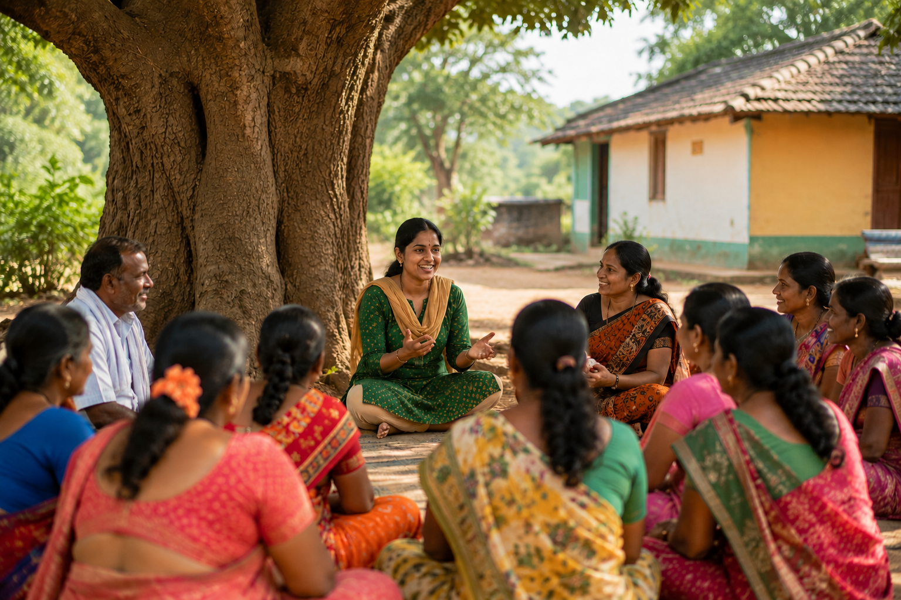

About Grameena Utpanna Kendra
Organising People. Creating Opportunities. Building Self-Reliance. Grameena Utpanna Kendra was formed by like-minded people who believe that sustainable development begins at the grassroots. Our purpose is to help rural households access self-employment, income opportunities, skills, markets and livelihood support. We believe people should have opportunities to build better livelihoods within their own communities rather than being compelled to migrate to cities in search of work.

Our Vision
To build self-reliant rural communities with sustainable livelihoods and local economic opportunities.
Our Mission
We work to: Generate local employment opportunities Promote self-employment and entrepreneurship Support rural women and youth Promote local products Create market access Develop skills and capabilities Support farmers and local producers Connect local service providers with customers Encourage community participation
Guiding Principles
People-Centred Development
We focus on strengthening people's abilities, confidence and opportunities.
Collective Action
We encourage communities to organise, participate and grow together.
Skills & Knowledge
We promote practical skills, knowledge sharing and capacity building.
Market Access
We help connect local products and services with customers and markets.
Inclusion
We encourage participation from rural households, women, farmers, labourers, youth, persons with disabilities and other vulnerable groups.Transparency & Accountability
We believe trust is built through responsible, transparent and accountable processes.
Our Core Values
Our Approach
We bring together people, skills, opportunities, market access and community support to create a stronger grassroots livelihood ecosystem.